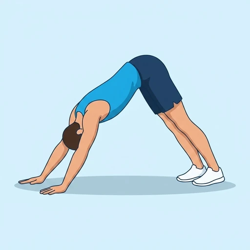

Downward Dog Pedal
A warm-up performed in downward dog: the knees bend one at a time so each heel presses towards the floor in turn, taking the calf and the back of the ankle through a moving stretch instead of a static hold.
Lower legs · Bodyweight · Beginner


Muscles worked by the Downward Dog Pedal
Primary
Secondary
Also called: calf, calves, gastrocnemius, gastroc, soleus, deep calf.
Equipment
No equipment — this is a bodyweight exercise.
How to do the Downward Dog Pedal
- Set up in downward dog with the hands shoulder-width apart and the hips high.
- Bend one knee and let that heel lift while the opposite heel presses down towards the floor.
- Switch sides smoothly, as if pedalling, keeping the hips high throughout.
- Keep the hands pressing evenly so the shoulders stay stable.
- Continue alternating for the desired number of repetitions or time.
Form tips
- Keep the hips high; the point is the calves, not a deeper fold.
- Press the whole hand into the floor so the wrists do not take all the load.
- Move slowly enough to feel each side lengthen rather than bouncing.
At a glance
| Body part | Lower legs |
|---|---|
| Category | Stretching |
| Force type | Dynamic |
| Mechanic | Compound |
| Difficulty | Beginner |
| Equipment | Bodyweight |
| Goals | Mobility |
| Tags | Mobility, Stretching |
| MET | 5.0 (metabolic equivalent, for calorie estimates) |
| Unilateral | No |
| Bodyweight | Yes |
| Dataset id | downward-dog-pedal |
Downward Dog Pedal in German & Spanish
| German | Fersenwippen im herabschauenden Hund |
|---|---|
| Spanish | Pedaleo en Perro Boca Abajo |
Descriptions, instructions and tips ship in all three languages in the JSON.
Related exercises
Exercise data (JSON)
The record below is exactly what exercises.json ships for this exercise — names, descriptions, instructions and tips in English, German and Spanish.
{
"id": "downward-dog-pedal",
"name_en": "Downward Dog Pedal",
"name_de": "Fersenwippen im herabschauenden Hund",
"name_es": "Pedaleo en Perro Boca Abajo",
"description_en": "A warm-up performed in downward dog: the knees bend one at a time so each heel presses towards the floor in turn, taking the calf and the back of the ankle through a moving stretch instead of a static hold.",
"description_de": "Ein Aufwärmen im herabschauenden Hund: die Knie beugen sich abwechselnd, sodass jede Ferse nacheinander Richtung Boden drückt - eine bewegte Dehnung für Wade und Achillessehne statt eines statischen Halts.",
"description_es": "Un calentamiento dentro del perro boca abajo: las rodillas se flexionan alternando, de modo que cada talón presiona hacia el suelo por turnos y la pantorrilla y el tobillo reciben un estiramiento en movimiento en lugar de un mantenimiento estático.",
"category": "stretching",
"force_type": "dynamic",
"mechanic": "compound",
"difficulty": "beginner",
"body_part": "lower_legs",
"primary_muscles": [
"gastrocnemius",
"soleus"
],
"secondary_muscles": [
"hamstrings"
],
"goals": [
"mobility"
],
"tags": [
"mobility",
"stretching"
],
"is_unilateral": false,
"is_bodyweight": true,
"instructions_en": [
"Set up in downward dog with the hands shoulder-width apart and the hips high.",
"Bend one knee and let that heel lift while the opposite heel presses down towards the floor.",
"Switch sides smoothly, as if pedalling, keeping the hips high throughout.",
"Keep the hands pressing evenly so the shoulders stay stable.",
"Continue alternating for the desired number of repetitions or time."
],
"instructions_de": [
"Geh in den herabschauenden Hund, die Hände schulterbreit, die Hüfte hoch.",
"Beug ein Knie und lass diese Ferse abheben, während die andere Ferse Richtung Boden drückt.",
"Wechsle flüssig die Seiten, wie beim Treten, die Hüfte bleibt durchgehend hoch.",
"Druck die Hände gleichmäßig in den Boden, damit die Schultern stabil bleiben.",
"Wechsle weiter für die gewünschte Anzahl an Wiederholungen oder die vorgegebene Zeit."
],
"instructions_es": [
"Colócate en perro boca abajo con las manos a la anchura de los hombros y las caderas altas.",
"Flexiona una rodilla y deja que ese talón se eleve mientras el talón contrario presiona hacia el suelo.",
"Cambia de lado con fluidez, como pedaleando, manteniendo las caderas altas todo el tiempo.",
"Presiona las manos por igual para que los hombros se mantengan estables.",
"Sigue alternando las veces o el tiempo indicados."
],
"tips_en": [
"Keep the hips high; the point is the calves, not a deeper fold.",
"Press the whole hand into the floor so the wrists do not take all the load.",
"Move slowly enough to feel each side lengthen rather than bouncing."
],
"tips_de": [
"Halte die Hüfte hoch; es geht um die Waden, nicht um eine tiefere Vorbeuge.",
"Druck die ganze Handfläche in den Boden, damit die Handgelenke nicht die ganze Last tragen.",
"Beweg dich langsam genug, um jede Seite zu spüren, statt zu federn."
],
"tips_es": [
"Mantén las caderas altas; el objetivo son las pantorrillas, no una flexión más profunda.",
"Presiona toda la mano contra el suelo para que las muñecas no carguen con todo.",
"Muévete lo bastante despacio como para sentir cada lado en lugar de rebotar."
],
"met": 5.0,
"images": {
"flat": {
"start": "images/flat/downward-dog-pedal-start.webp",
"peak": "images/flat/downward-dog-pedal-peak.webp"
}
}
}Fetch just this exercise
const { exercises } = await fetch(
"https://exercise-dataset.com/exercises.json"
).then(r => r.json());
const ex = exercises.find(e => e.id === "downward-dog-pedal");Free for personal and commercial in-app use with attribution (“Exercise data by RepDB”) — see the license and ready-made attribution snippets. Redistributing the data as a dataset or API is not permitted.